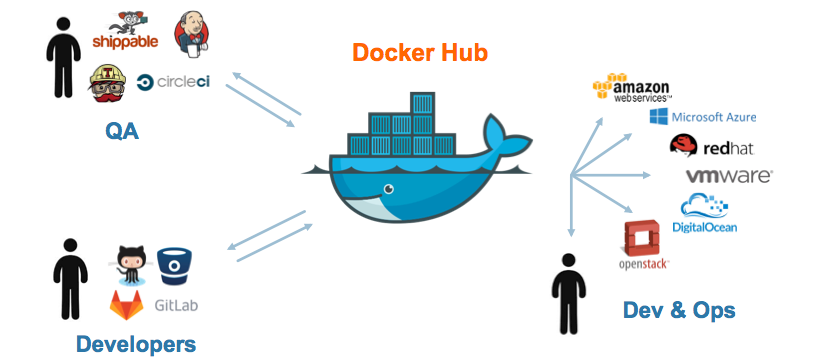
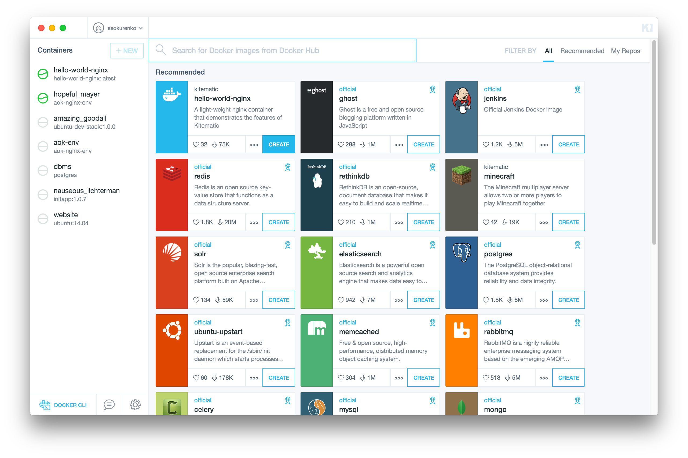
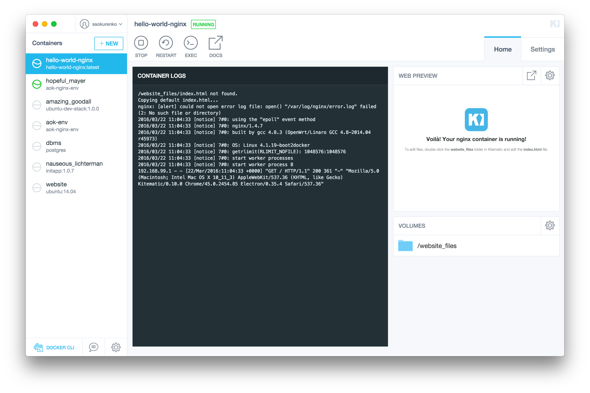
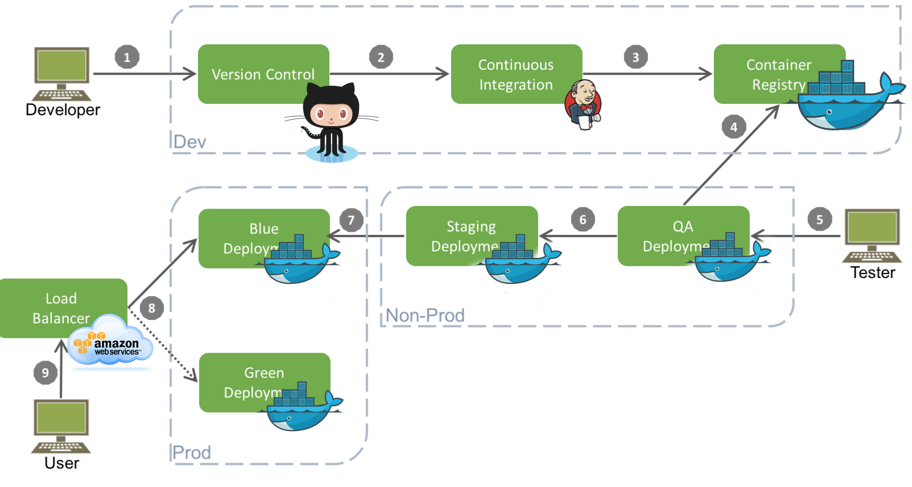

Introdução ao
Adaptado por Samir C. Costa
Agenda
- Visão geral
- Conceitos básicos
- Arquitetura
- VMs x Containers
- Docker engine
- Docker machine
- Docker Hub
- Ferramentas Avançadas
- Workflow
- DEMO
O Desafio

Desafio do Desenvolvimento

Transportes de Carga Pre-1960

O mesmo problema

Solução: Entrega de Container Intermodal

Docker é um Sistema de Container para Código

Matriz de Desenvolvimento

Ambiente Comum
Dev QA Ops
Motivação para desenvolvedores
Build uma vez e executa em qualquer lugar:
- Um ambiente limpo, seguro e previsível para apps
- Não se preocupa com dependências que estão faltando
- Teste e empacotamento automático
- Reduz/elimina esforços acerca de compatibilidade em diferentes plataformas
Motivação para operadores/sysadmins
Configure uma vez e execute qualquer coisa:
- Tornar todo o ciclo de vida mais eficiente, consistente e repetível.
- Eliminar as inconsistências entre os ambientes de desenvolvimento, teste, produção e cliente.
- Velocidade e confiabilidade dos sistemas de integração contínua e implantação.
- Significativo desempenho, custos mais baixos, implantação e portabilidade (em comparação com VMs).
Arquitetura

VMs x Containers

Por que Containers Docker são leves?

Quais os princípios do Sistema Docker?

Mudanças e Atualizações

hub.docker.com

Ferramentas Avançadas
- Docker Compose: uma ferramenta para a definição e execução de aplicativos Docker multi-containers
- Docker Swarm: ferramenta nativa de clusterização que torna um pool de hosts Docker em um único host Docker virtual
- Docker Cloud: deploying de clusters e serviços para provedores de serviço cloud (AWS, DigitalOcean etc)
Kitematic para Mac OS X
 Atualmente em BETA.
Possível Workflow
Hora do Demo

Quer aprender mais?
- Documentação oficial: docs.docker.com
- Hub: hub.docker.com
- Cloud: cloud.docker.com
- Github: dotcloud/docker
- Google Group: docker-user
- Twitter: @docker
- Encontros: www.docker.io/meetups